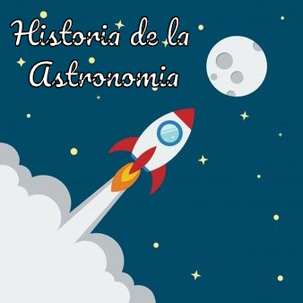
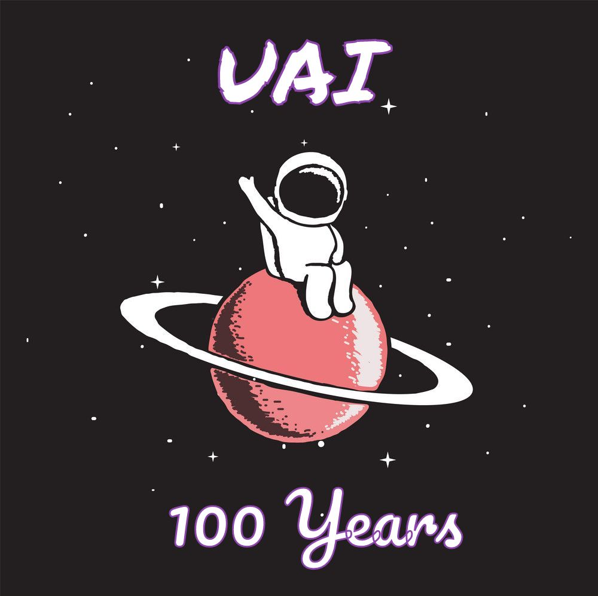
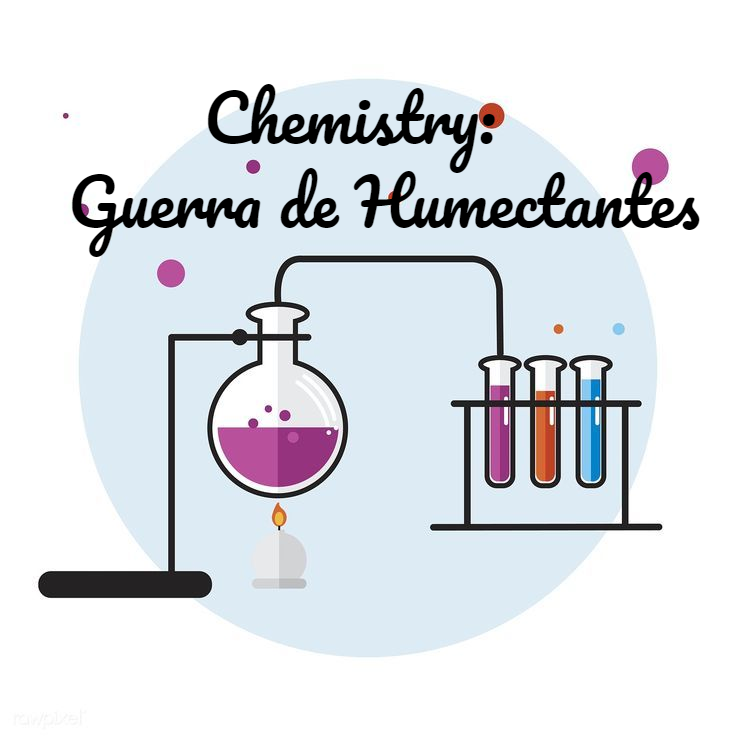

Breve historia de la astronomia antigua desde nuestros
inicios de la humanidad, pues tuvimos una cultura altamente astronomica...

Ya el año pasado se cumplio 100 años de la fundacion de la Union Astronomica Internaciona, conoce
un poco mas de esta institucion aca...

En esta seccion, conoceras acerca de porque el alcohol en gel y el jabon contienen
la glicerina, ademas de porque otros productos sustitutos...